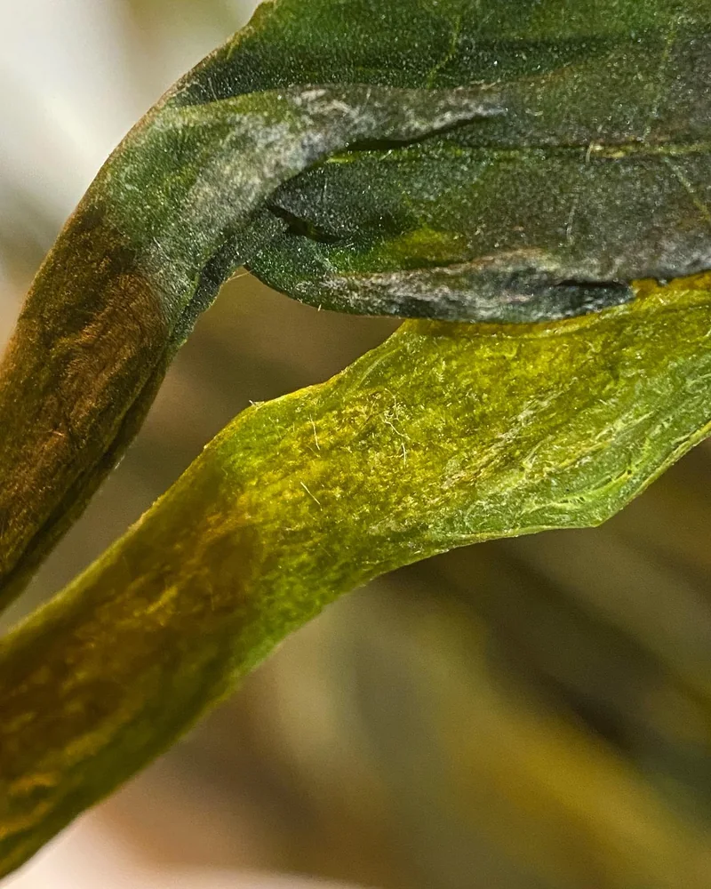
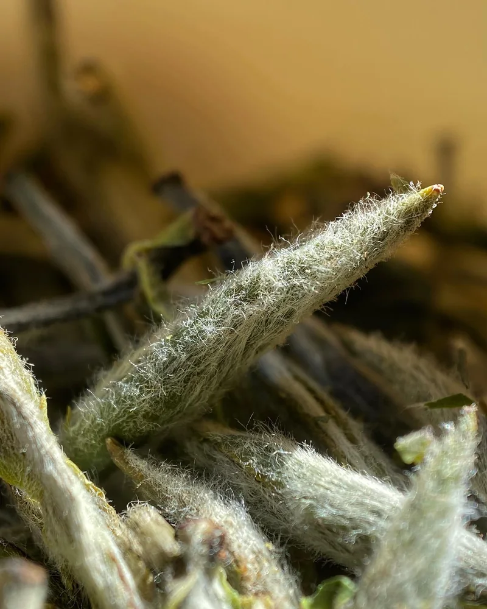
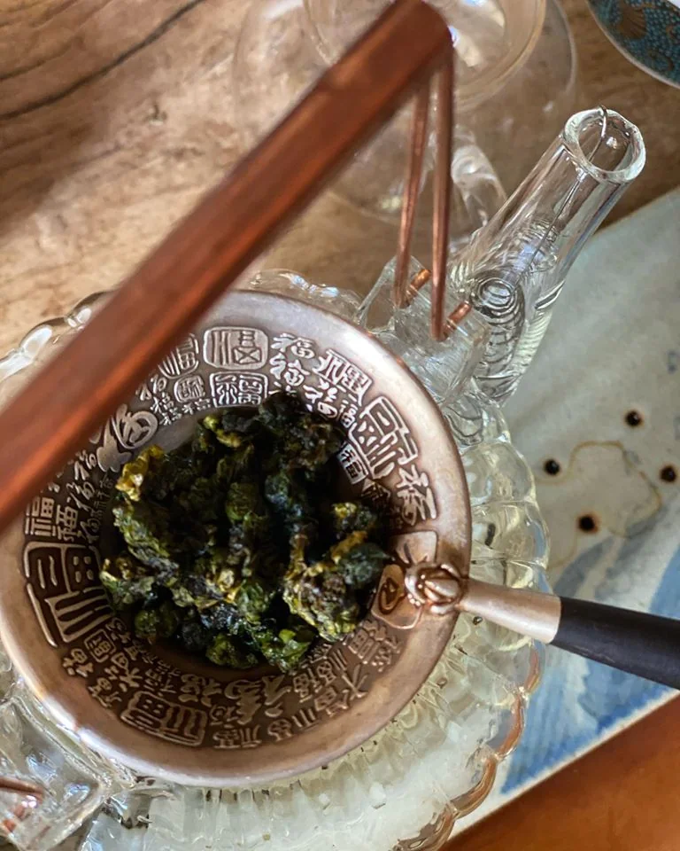
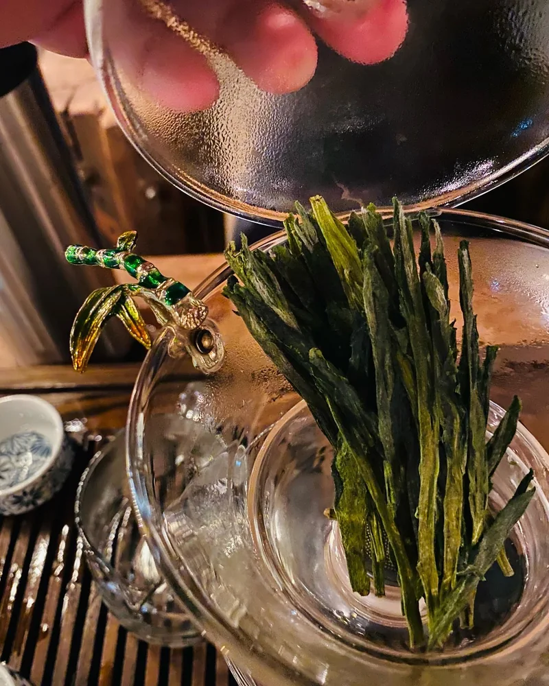

Чайная коллекция
Три чая в двух состояниях. Откройте сорт, чтобы рассмотреть сухой лист и тот же чай в настое.

Зелёный чай
Тайпин Хоукуй
Свежий, травяной

Белый чай
Тоу Бянь Таймушань Байхао Иньчжэнь
Мягкий, миндальный

Тайваньский улун
Алишань Цзинь Сюань
Нежный, сливочный
Из чайной коллекции
Подобрать чай
Какой вкус хочется сегодня? Выберите оттенок, и мы покажем чай из коллекции.
